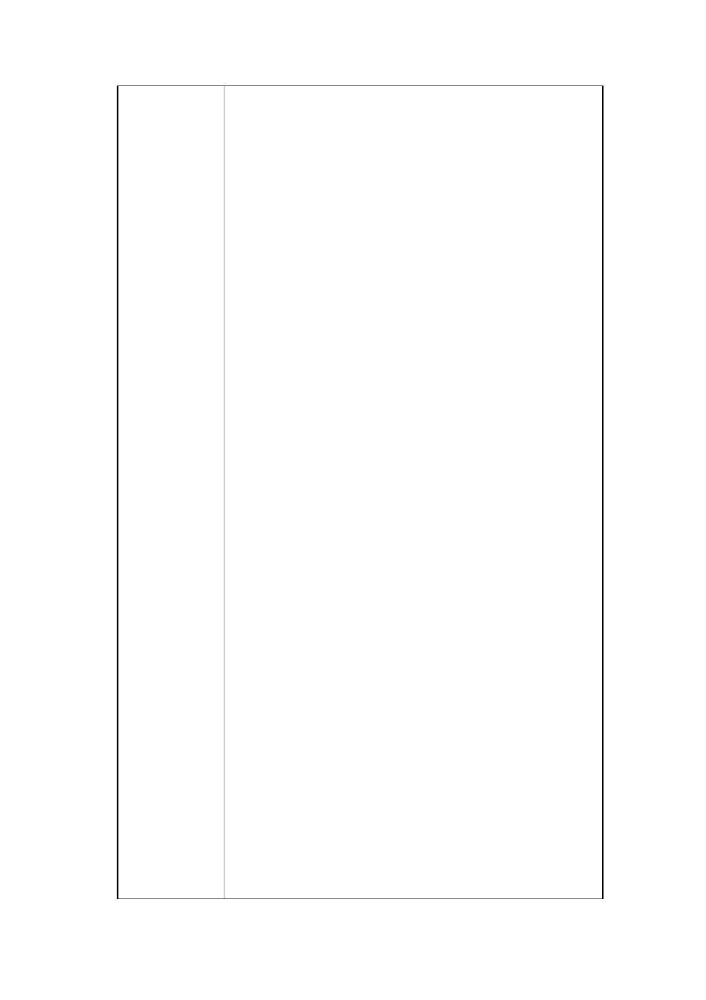

主同意聯合開發，將不實之意見調查表納為正式地
主同意書送交都市發展局，以矇蔽都市發展局及都
市計畫委員會各級長官，該意見調查表多數為傳
真、影印、不具名、或為代書及都更公司偽造非地
主本人親簽、捷運工程局並宣稱已取得絕大多數地
主同意聯合開發，本席長年來身為民意代表肩負人
民所託，並持續向市府及監察院檢舉告發，所有相
關資料及函文，都市發展局及捷運工程局皆有案可
查，不再重複陳述說明。
二、 監察院表示：捷運新莊線大橋頭站西側聯合開
發案，其過程疑涉有諸多違失，嚴重損害地主權益
等。。。，仍請確實檢討研處，。。。本案地下捷
運系統也已完成施作，是否有將西側基地全數劃入
聯開範圍之必要性，仍請考量。
三、近年來政府推動聯合開發案如雙子星、美河市
案，很遺憾！皆有弊端問題產生，其中有承辦官員
已遭起訴，影響社會層面甚鉅，本席肯定現任捷運
工程局各處同仁長官，順應民意歸還民地，經市府
同意撤銷聯合開發案。
四、依據捷運工程局於 103 年 4 月 24 日召開說明會
徵詢土地所有權人及與會者意見，經統計表示不願
意繼續推動案者，人數 55 人，占全部私有土地所有
權人數比例為 53 .4%，其土地占全部私有土地面積
比例為 5 1. 7%，反對聯合開發地主已超過半數以
上，其土地占全部私有土地面積也超過半數以上，
基於用地範圍內私有土地所有權人參與聯合開發意
願偏低，且經市府同意將本案依「都市計畫法第 27
條第 1 項第 4 款規定」回復原都市計畫使用分區，
請都市發展局儘速於公告後 103 年 12 月 3 日函文都
市計畫委員會即刻召開會議，恢復私地主土地原使
用分區，請都市發展局儘速辦理。
五、103 年 11 月 19 日都市發展局舉辦之說明會，
有 10 位地主(李宗達、李宗錕、李民義、葉霖奇、
葉霖杰、黃文魁、楊玉秀、郭再興、李冠霆、李燕
華)不同意聯合開發要求儘速恢復土地原使用分
區，並已向本席通知自行寄出調查表至都市計畫委
員會。
六、另附本案不同意開發地主意見表 21 份，請都
第 22 頁 / 共 25 頁